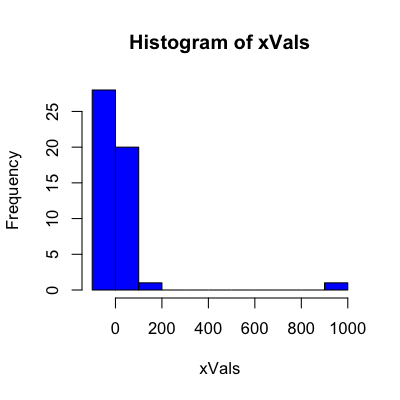
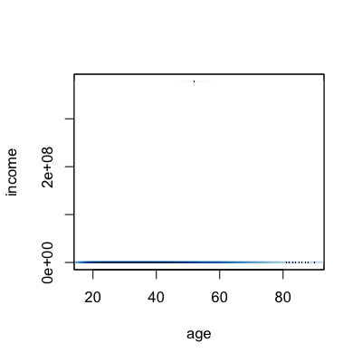
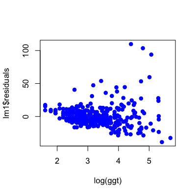

- Confounders
- Complicated interactions
- Skewness
- Outliers
- Non-linear patterns
- Variance changes
- Units/scale issues
- Overloading regression
- Correlation and causation
Regression in the real world
Jeffrey Leek, Assistant Professor of Biostatistics
Johns Hopkins Bloomberg School of Public Health
Things to pay attention to
The ideal data for regression
library(UsingR); data(galton)
plot(galton$parent,galton$child,col="blue",pch=19)

Confounders
Confounder: A variable that is correlated with both the outcome and the covariates
- Confounders can change the regression line
- They can even change the sign of the line
- They can sometimes be detected by careful exploration
Example - Millenium Development Goal 1

WHO childhood hunger data
download.file("http://apps.who.int/gho/athena/data/GHO/WHOSIS_000008.csv?profile=text&filt
er=COUNTRY:*;SEX:*","./data/hunger.csv",method="curl")
hunger <- read.csv("./data/hunger.csv")
hunger <- hunger[hunger$Sex!="Both sexes",]
head(hunger)
Indicator Data.Source PUBLISH.STATES Year WHO.region
2 Children aged <5 years underweight (%) NLIS_312819 Published 2004 Eastern Mediterranean
3 Children aged <5 years underweight (%) NLIS_312819 Published 2004 Eastern Mediterranean
6 Children aged <5 years underweight (%) NLIS_312361 Published 2000 Europe
7 Children aged <5 years underweight (%) NLIS_312361 Published 2000 Europe
9 Children aged <5 years underweight (%) NLIS_312879 Published 2005 Europe
10 Children aged <5 years underweight (%) NLIS_312879 Published 2005 Europe
Country Sex Display.Value Numeric Low High Comments
2 Afghanistan Female 33.0 33.0 NA NA NA
3 Afghanistan Male 32.7 32.7 NA NA NA
6 Albania Male 19.6 19.6 NA NA NA
7 Albania Female 14.2 14.2 NA NA NA
9 Albania Male 7.3 7.3 NA NA NA
10 Albania Female 5.8 5.8 NA NA NA
Hunger over time by region
par(mfrow=c(1,2))
plot(hunger$Year,hunger$Numeric,col=as.numeric(hunger$WHO.region),pch=19)
plot(1:10,type="n",xaxt="n",yaxt="n",xlab="",ylab="")
legend(1,10,col=unique(as.numeric(hunger$WHO.region)),legend=unique(hunger$WHO.region),pch=19)

Region correlated with year
anova(lm(hunger$Year ~ hunger$WHO.region))
Analysis of Variance Table
Response: hunger$Year
Df Sum Sq Mean Sq F value Pr(>F)
hunger$WHO.region 5 538 107.5 2.33 0.041 *
Residuals 852 39316 46.1
---
Signif. codes: 0 '***' 0.001 '**' 0.01 '*' 0.05 '.' 0.1 ' ' 1
Region correlated with hunger
anova(lm(hunger$Numeric ~ hunger$WHO.region))
Analysis of Variance Table
Response: hunger$Numeric
Df Sum Sq Mean Sq F value Pr(>F)
hunger$WHO.region 5 76032 15206 154 <2e-16 ***
Residuals 852 84211 99
---
Signif. codes: 0 '***' 0.001 '**' 0.01 '*' 0.05 '.' 0.1 ' ' 1
Including region - a complicated interaction
plot(hunger$Year,hunger$Numeric,pch=19,col=as.numeric(hunger$WHO.region))
lmRegion <- lm(hunger$Numeric ~ hunger$Year + hunger$WHO.region + hunger$Year*hunger$WHO.region )
abline(c(lmRegion$coeff[1] + lmRegion$coeff[6],lmRegion$coeff[2]+ lmRegion$coeff[12]),col=5,lwd=3)

Income data
download.file("http://archive.ics.uci.edu/ml/machine-learning-databases/adult/adult.data","./data/income.csv",method="curl")
incomeData <- read.csv("./data/income.csv",header=FALSE)
income <- incomeData[,3]
age <- incomeData[,1]
Logs to address right-skew
par(mfrow=c(1,4))
smoothScatter(age,income)
hist(income,col="blue",breaks=100)
hist(log(income+1),col="blue",breaks=100)
smoothScatter(age,log(income+1))

Outliers
Example - extreme points
set.seed(1235)
xVals <- rcauchy(50)
hist(xVals,col="blue")

Example - Outliers may be real
# Add Tim Cook, CEO of Apple 2011 income
age <- c(age,52)
income <- c(income,378e6)
smoothScatter(age,income)

http://www.macworld.com/article/2023491/apple-gives-tim-cook-51-percent-salary-increase.html
Example - Does not fit the trend

Outliers - what you can do
- If you know they aren't real/of interest, remove them (but changes question!)
- Alternatively
A line isn't always the best summary

You can end up saying some pretty silly stuff

http://www.nature.com/nature/journal/v431/n7008/fig_tab/431525a_F1.html
"We are students aged 16–18 in a Texas high school. Our biology teacher Vidya Rajan asked us to comment on the paper by A. J. Tatem and colleagues (Nature 431, 525; 2004); we believe the projection on which it is based is riddled with flaws..." http://www.nature.com/nature/journal/v432/n7014/full/432147c.html
"They omit to mention, however, that (according to their analysis) a far more interesting race should occur in about 2636, when times of less than zero seconds will be recorded" http://www.nature.com/nature/journal/v432/n7014/full/432147b.html
Variance changes
bupaData <- read.csv("ftp://ftp.ics.uci.edu/pub/machine-learning-databases/liver-disorders/bupa.data",header=F)
ggt <- bupaData[,5]; aat <- bupaData[,3]
plot(log(ggt),aat,col="blue",pch=19)

Plot the residuals
lm1 <- lm(aat ~ log(ggt))
plot(log(ggt),lm1$residuals,col="blue",pch=19)

Changing variance - what you can do
- There is a long literature on this problem (heteroskedasticity)
- A few examples
Variation in units

Relative units

When there is variation in units
- Standardize, but keep track
- Affects model fits
- Affects interpretation
- Affects inference
Overloading regression

Correlation and Causation

Even when looking for associations

Again, it can get silly

http://www.statschat.org.nz/2012/10/12/even-better-than-chocolate/
Correlation vs. Causation
- Use caution when interpreting regression results
- Be critical of surprising associations
- Consider alternative explanations